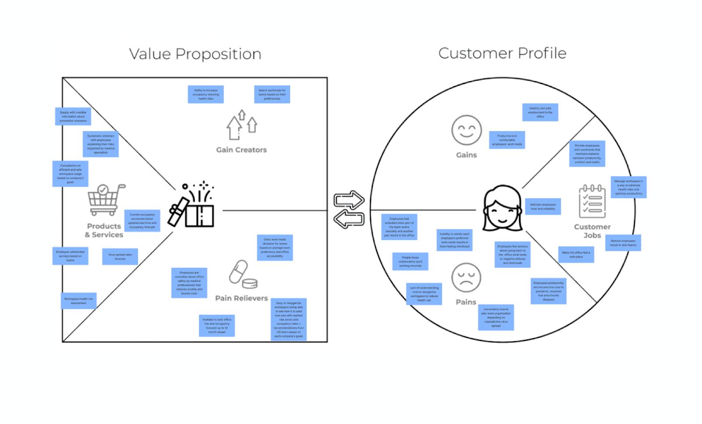

Kirjeldus
Design-Driven Development (DDD) on tarkvaraarendusprotsess, mis keskendub disainile kui kesksele osale arenduse tsüklis. Selle eesmärk on tuua disainimeeskond, arendajad ja sidusrühmad kokku, et luua kasutajakesksemaid ja intuitiivsemaid lahendusi.
Arendustsükli joonis
Allolev joonis illustreerib Design-Driven Development tsüklit:
Head ja vead
Head küljed
- Toetab kasutajakeskset lähenemist ja disainimõtlemist.
- Parandab suhtlust disainerite ja arendajate vahel.
- Tagab selgema ja parema kasutajakogemuse.
- Vähendab korduvate muudatuste vajadust hilisemas etapis.
Halvad küljed
- Nõuab rohkem aega ja ressursse disainiprotsessi kaasamiseks.
- Võib tekitada konflikte disainimeeskonna ja arendajate prioriteetide vahel.
- Kompleksne suurtes ja hajutatud meeskondades rakendada.
Case-vahend: UXPin
UXPin on tööriist, mis toetab Design-Driven Developmenti, võimaldades disaineritel ja arendajatel teha koostööd reaalajas ja luua prototüüpe, mis on sujuvalt ühilduvad arenduse töövoogudega.
UXPin omadused
- Toetab interaktiivsete prototüüpide loomist ja jagamist.
- Ühilduvus disainitööriistade ja arenduskeskkondadega.
- Soodustab disainerite ja arendajate vahelist tihedat koostööd.
Näide UXPin protsessist:
1. Looge prototüüp UXPinis.
2. Siduge disainifailid olemasoleva koodibaasiga.
3. Testige ja valideerige prototüüpi reaalajas kasutajatega.
4. Rakendage muudatused otse prototüübist arenduskeskkonda.